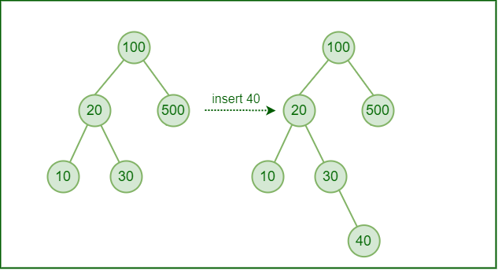
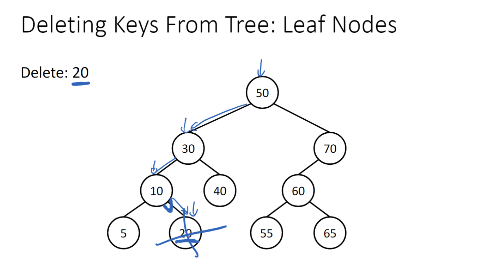
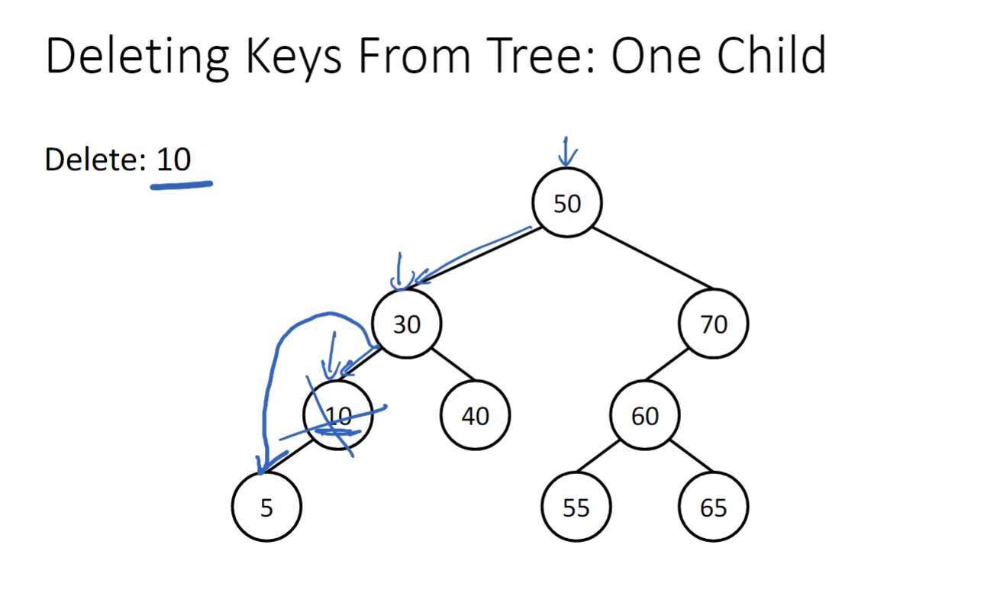
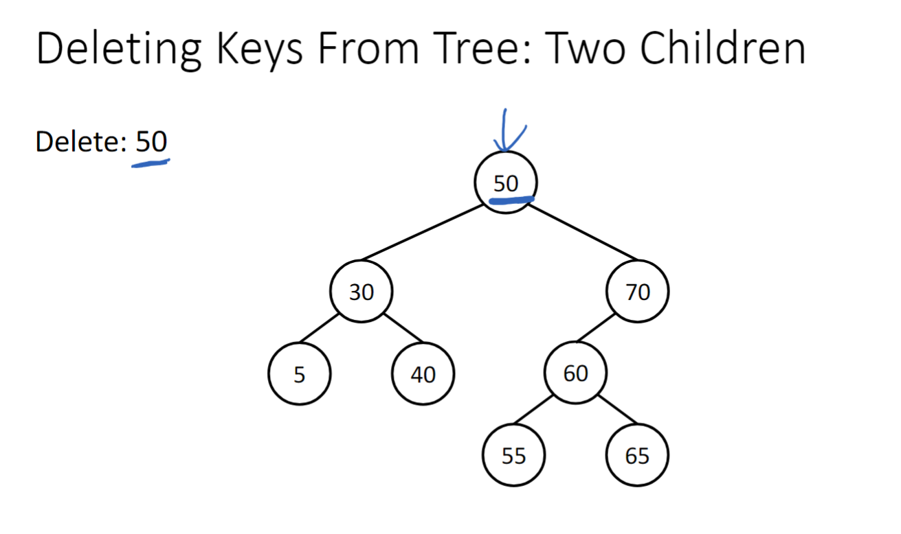

Insertion
1) Compare to root node.
2) Traverse right if greater or left if less than.
3) Continue tree traversal until leaf node is found and insert as child.

Deletion
1) Find node.
2) Delete node.
3) Fix tree.
Deletion Cases
  
Next Topic: Red Black Trees